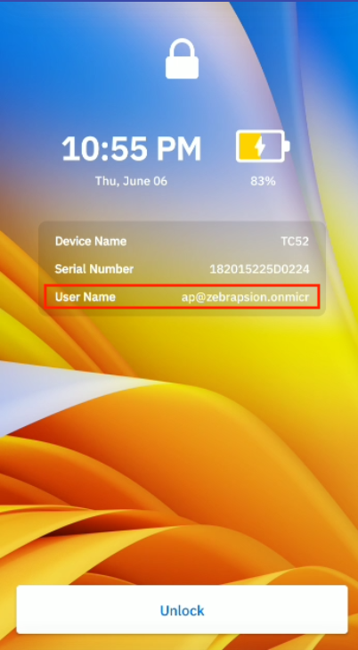

Overview
Zebra Identity Guardian streamlines the implementation of authentication strategies, enabling seamless user access to devices. Designed for both enterprise-shared and personally assigned mobile computers, it offers a secure login method that facilitates effortless device access while safeguarding user and corporate data. By leveraging facial biometrics and single sign-on (SSO) compatibility, it provides seamless and secure access to both devices and applications.
Key benefits of Identity Guardian:
- User Data Protection - Multiple layers of protection ensure that employee data is protected, while employees have control over their data.
- Application Authentication - Integration with identity providers (IdPs) simplifies authentication by only requiring users to log in once and then leveraging single sign-on (SSO) to streamlines the process.
- Facial Biometrics - Users seamlessly and securely unlock their mobile device using facial biometrics.
- Multifactor Login - For enhanced security, users can be prompted to provide multiple authentication factors to sign into a device: facial recognition, user passcode, and/or SSO authentication
- Accountability - Empowers administrators with comprehensive visibility into devices and their associated users.
- Personalization - Enables organizations to customize on-device experiences that are specifically tailored to align with the roles of the users.
Main Features
Identity Guardian main features:
- Supports user enrollment and authentication for shared and personally-assigned devices
- Multi-factor authentication support:
- Facial biometric authentication
- User passcode authentication
- SSO authentication using Microsoft Entra ID or PingID
- Supports other apps and device events that invoke the lock screen
- Installation and configuration can be performed through Zebra DNA Cloud
- Device usage details and user information is visible from the Zebra DNA Cloud console
New in 1.6
- The Guardian Safe feature is now officially released. It securely stores user credentials after a single entry on the login screen of any application, automatically filling in the credentials for future logins. Note: Use of Guardian Safe requires an Identity Guardian license.
- New Auto Fill for SSO feature that automatically populates SSO credentials during user authentication, streamlining the device sign-in experience.
- Early Access Preview:
- Now securely self-enroll new users directly from the Identity Guardian lock screen on devices configured for Authentication mode, using SSO for identity verification. This eliminates the need for switching the application mode between Enrollment and Authentication. To enable direct barcode printing or sharing from the device, a separate IGQR print application must be installed.
- New proxy mode enables Identity Guardian to operate in a non-blocking mode, offering device APIs to notify LOB applications of user check-in/check-out events. This feature is designed for organizations using their own blocking screen application for device access and who wish to receive notifications of these events from Identity Guardian.
- Implemented enhancements to reduce initialization delays during user authentication, such as when unlocking the device or resuming from a suspended state.
- Known Issues:
- Uninstalling Identity Guardian from the lock screen disables the home button on the device. To remedy this, either reinstall Identity Guardian or set it to enrollment mode before uninstallation.
- When installing Identity Guardian in enrollment mode from VMWare Workspace ONE UEM (AirWatch) EMM via Google Play, the authentication screen might appear instead of the expected enrollment screen. To prevent this, install, and configure the application from the VMWare private app store instead of the public play store.
- When using Microsoft Entra ID for single sign-on (SSO), a new user is not automatically logged into Microsoft Associated apps following the sign out of a previous user. To address this, users can either relaunch the Microsoft Associates apps or enter the newly logged in user ID when prompted, ensuring a successful login.
- A user authentication error might occur intermittently if a user attempts to cancel SSO authentication and then tries to re-authenticate. To resolve this, click on any button on the error screen to dismiss the error, allowing the user to proceed further.
- When PingFed is used for single sign-on (SSO) and Identity Guardian is upgraded, users might experience a one-time issue preventing them from signing in on a shared device. This is overcome by rebooting the device, docking it on a cradle, or locking/unlocking the device based on the configuration set by the system administrator. This issue does not recur after the first sign-out attempt.
Version History
New in 1.5
- Now supports OKTA single sign-on (SSO) provider using OAuth 2.0 (OIDC) protocol for SSO authentication.
- Now supports alternate sign-in methods from the lock screen, enabling admins to choose between different authentication workflows for granting device access.
- Users can now create a custom message to display on the lock screen.
- Admin Bypass login is added to the Identity Guardian lock menu along with fallback authentication supported in earlier versions.
- An enhanced user experience allows users to unlock the device using facial authentication without user interaction. This Auto-Unlock feature eliminates the need to press the Unlock button in the lock screen.

- Non-Identity Guardian barcodes can now be used as a comparison source. This allows users to scan non-Identity Guardian barcodes for device sign-in. Optionally, admins can add a prefix to validate the barcode. Zebra recommends using Identity Guardian-generated barcodes for maximum security.
- Early Access Preview:
- New Guardian Safe feature securely stores user credentials after a single entry on the login screen of any application, automatically filling in the credentials for future logins. Note: Use of Guardian Safe requires an Identity Guardian license and activation by Zebra support.
- Known Issues:
- Uninstalling Identity Guardian from the lock screen disables the home button on the device. To remedy this, either reinstall Identity Guardian or set it to enrollment mode before uninstallation.
- When installing Identity Guardian in enrollment mode from VMWare Workspace ONE UEM (AirWatch) EMM via Google Play, the authentication screen may appear instead of the expected enrollment screen. To prevent this, install, and configure the application from the VMWare private app store instead of the public Play store.
- When using Microsoft Entra ID for single sign-on (SSO), a new user is not automatically logged into Microsoft Associated apps following the sign out of a previous user. To address this, users can either relaunch the Microsoft Associates apps or enter the newly logged in user ID when prompted, ensuring a successful login.
- A user authentication error may occur intermittently if a user attempts to cancel SSO authentication and then tries to re-authenticate. To resolve this, click on any button on the error screen to dismiss the error, allowing the user to proceed further.
- When PingFed is used for single sign-on (SSO) and Identity Guardian is upgraded, users may experience a one-time issue where they cannot sign out from Identity Guardian on a shared device. This is overcome by rebooting the device, docking it on a cradle, or locking/unlocking the device based on the configuration set by the system administrator. This issue does not recur after the first sign-out attempt.
New in 1.4
- The new Lock Screen Configuration feature allows specific applications to appear in the foreground while the device is locked. To activate this feature, administrators should navigate to Lock Screen Configuration in Managed Configurations, enable “Apps Allowed On Lock Screen” and configure the associated application settings, including Application Details, Package Name and Activity Name. Zebra recommends restricting this feature to specific apps, such as the phone app for receiving calls.
- During user enrollment, users can now create a numeric-only passcode instead of an alphanumeric one. To enable this, administrators should select “Numeric” for the “Passcode Type” under Passcode Rules in Managed Configurations.
- The user name is now visible in the lock screen, in addition to the device name and serial number. 
- Resolved Issues:
- Enhanced the Identity Guardian application service to automatically restart after being suppressed by the system.
- Resolved an issue where users could not sign out of their device through the Identity Guardian notification if the Settings application was in the foreground.
- Known Issues:
- Uninstalling Identity Guardian from the lock screen disables the home button on the device. To remedy this, either reinstall Identity Guardian or set it to enrollment mode before uninstallation.
- When installing Identity Guardian in enrollment mode from VMWare Workspace ONE UEM (AirWatch) EMM via Google Play, the authentication screen may appear instead of the expected enrollment screen. To prevent this, install, and configure the application from the VMWare private app store instead of the public Play store.
- When using Microsoft Entra ID for single sign-on (SSO), a new user is not automatically logged into Microsoft Associated apps following the sign out of a previous user. To address this, users can either relaunch the Microsoft Associates apps or enter the newly logged in user ID when prompted, ensuring a successful login.
- A user authentication error may occur intermittently if a user attempts to cancel SSO authentication and then tries to re-authenticate. To resolve this, click on any button on the error screen to dismiss the error, allowing the user to proceed further.
- When PingFed is used for single sign-on (SSO) and Identity Guardian is upgraded, users may experience a one-time issue where they cannot sign out from Identity Guardian on a shared device. This is overcome by rebooting the device, docking it on a cradle, or locking/unlocking the device based on the configuration set by the system administrator. This issue does not recur after the first sign-out attempt.
New in 1.3
- Google Play Availability and Auto-Updates: Starting with Identity Guardian 1.3, the app is now available for download from Google Play as well as the Zebra Support Portal.
- The Authentication Data Storage feature, formerly a preview, is now officially available. It provides temporary storage for user barcode data, requiring just a single scan for initial usage during a work shift. Based on admin configurations, device access may trigger primary and secondary authentication.
- Resolved Issues:
- Resolved an intermittent issue where devices displayed a “Scan to Unlock” button on the blocking screen instead of the “Unlock” button when device authentication was set to a mode that does not require the end user to scan a barcode.
- Resolved an issue where end user was not able to login to the device using Admin Bypass Passcode as the fallback authentication.
- On TC22 or TC27 devices, an error message no longer appears requiring the MDNA license following a device restart.
- Known Issues:
- Uninstalling Identity Guardian from the blocking screen disables the home button on the device. To remedy this, either reinstall Identity Guardian or set it to enrollment mode before uninstallation.
- When installing Identity Guardian in enrollment mode from VMWare Workspace ONE UEM (AirWatch) EMM, the authentication screen may appear instead of the expected enrollment screen.
New in 1.2
- Integration of Zebra Device Tracker with Identity Guardian client. Device Tracker v6.2 now offers full support for Identity Guardian to collect device checkin/checkout data and single sign-on (SSO) support.
- Retrieve multifactor authentication information from the Current and Previous User Session API.
- Preview a new feature, Authentication Data Storage, allowing for temporary storage of user authentication data on the device, eliminating the need for repeated barcode scans on a shared device. A one-time scan is sufficient for initial use. Depending on the admin configuration, subsequent device access may prompt primary/secondary authentication. Full functionality of this feature will be available in the upcoming release of Identity Guardian.
- Added support for MC9300, MC9400, MC3300, PS20J, L10A, TC8300, VC8300, and WS50. See the Zebra Support Portal for the list of supported devices.
- Resolved Issues:
- Enhanced Identity Guardian blocking screen behavior to appear quicker after device reboot.
- Resolved an issue where Identity Guardian’s managed configuration was not loading from the EMM UI.
- Ping Identity SSO configurations now consistently function with Identity Guardian when set up from EMMs.
- Known Issues:
- If a device's authentication is configured to a mode that does not require a barcode scan, it may intermittently display the message "Scan to Unlock" instead of simply "Unlock". This obstructs the function of other authentication methods. A workaround is to lock and then unlock the device, which restores the functionality of alternative authentication modes.
- On TC22 or TC27 devices, occasionally an error message may appear requiring the MDNA license following a device restart.
New in 1.1
- Introduced SSO Mapping managed configuration encompassing options related to SSO user role mapping, originally part of SSO Authentication Configuration.
- Resolved Issues:
- Enhanced Identity Guardian blocking screen behavior to appear quicker after device reboot.
- Resolved an issue where Identity Guardian’s managed configuration was not loading from the EMM UI.
- Ping Identity SSO configurations now consistently functions with Identity Guardian when set up from an EMM.
- Known Issue: On TC22 or TC27 devices, occasionally an error message may appear requiring the MDNA license following a device restart.
Usage Notes
- Screen lock in Android device settings must be set to “None.” Other types of screen locks, such as swipe or pin, are not supported.
- While performing facial biometric authentication on a Zebra ET45, the device must not be rotated.